<
Catálogo
Don´t Breathe 2
Un veterano ciego debe usar su entrenamiento militar para salvar a un joven
huérfano de un grupo de matones que irrumpen en su casa.
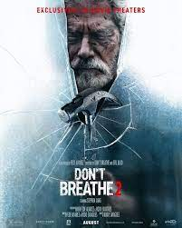
Ver trailer
Host
Un grupo de amigos hace una sesión de espiritismo por Zoom durante la
cuarentena. La sesión les lleva a vivir experiencias aterradoras cuando un
espíritu aterrador invade sus casas.
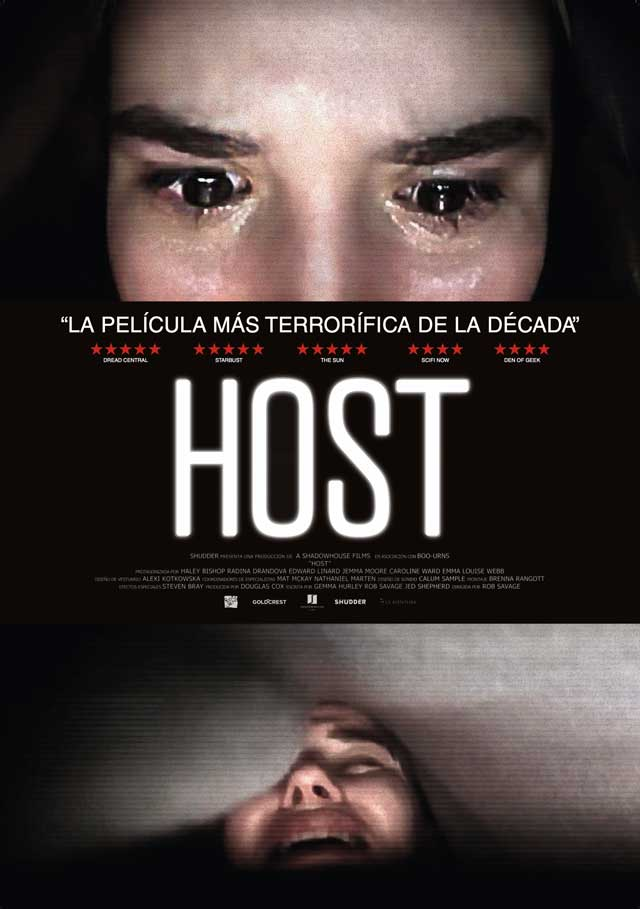
Ver trailer
Blood Red Sky
Luego de que un grupo de terroristas secuestra un vuelo transatlántico,
una mujer enferma debe exponer un secreto monstruoso para proteger a su hijo.
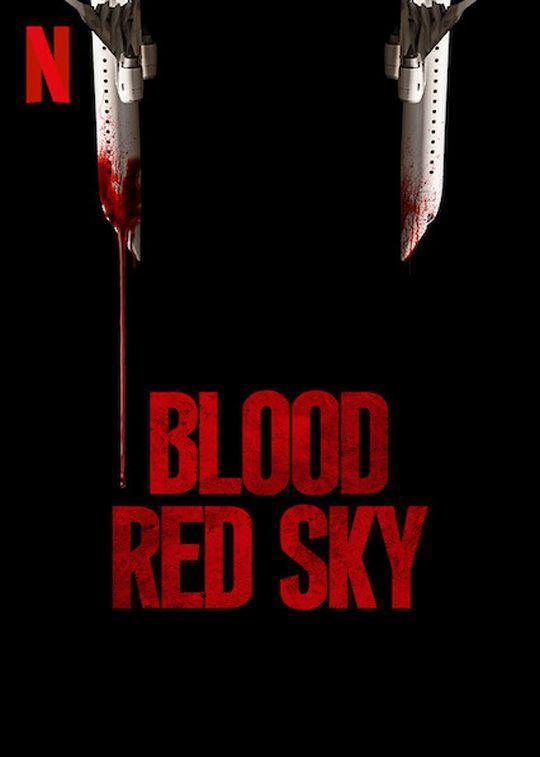
Ver trailer
A Quiet Place Parte II
La familia Abbott ahora se enfrenta a los terrores del mundo exterior. Forzados a
aventurarse en lo desconocido, se dan cuenta de que las criaturas que cazan por el sonido
no son las únicas amenazas que acechan más allá del camino de arena.
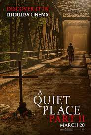
Ver trailer
The Hunt
Doce desconocidos despiertan en el claro de un bosque. No se conocen, pero tienen algo
en común: un grupo de millonarios los ha elegido para divertirse cazándolos como si
fueran animales salvajes. No obstante, algunos venderán cara su piel.
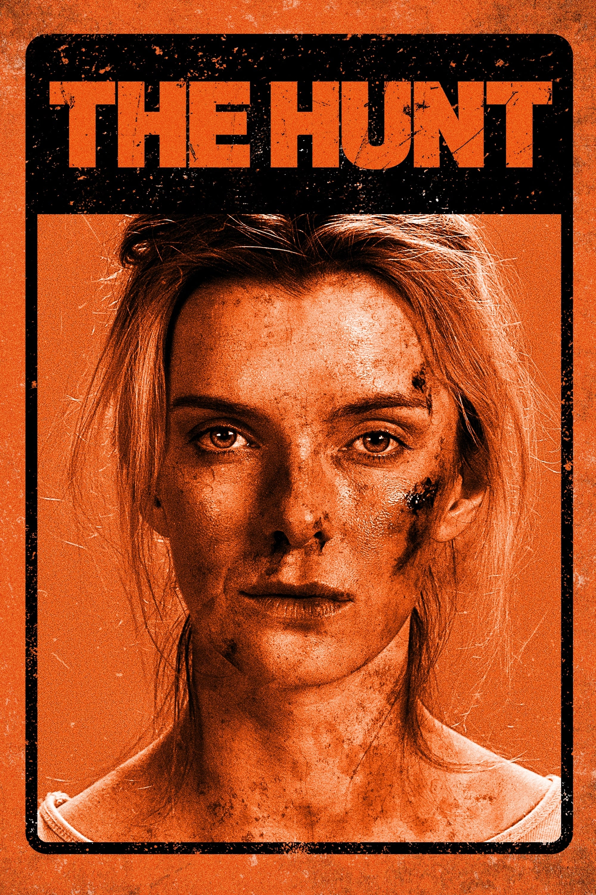
Ver trailer
La otra Missy
Tras un intensa relación virtual, un joven decide invitar a la chica de sus
sueños a una isla paradisíaca. Sin embargo, cuando se encuentran en persona,
ambos se dan cuenta del error que han cometido.
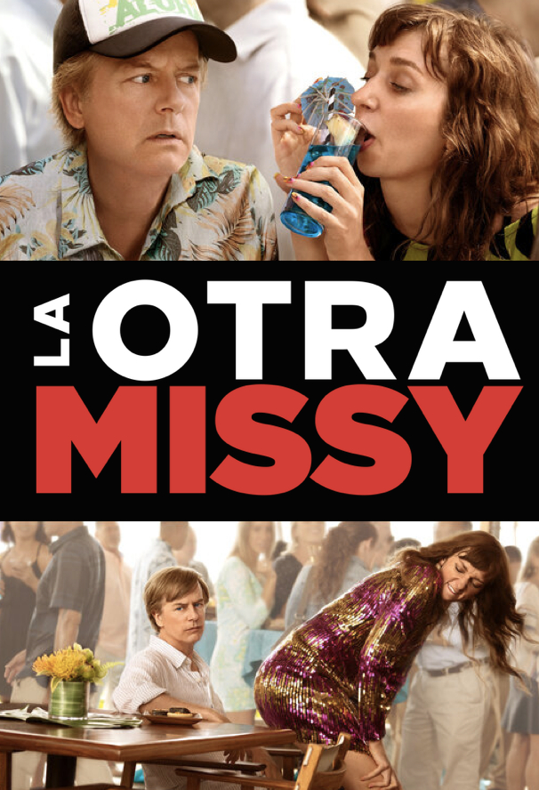
Ver trailer
¿Quién son los Miller?
Un traficante de marihuana se crea una familia ficticia con una stripper y dos jóvenes.
Esto forma parte de su plan para pasar un gran cargamento de droga desde México a
Estados Unidos.
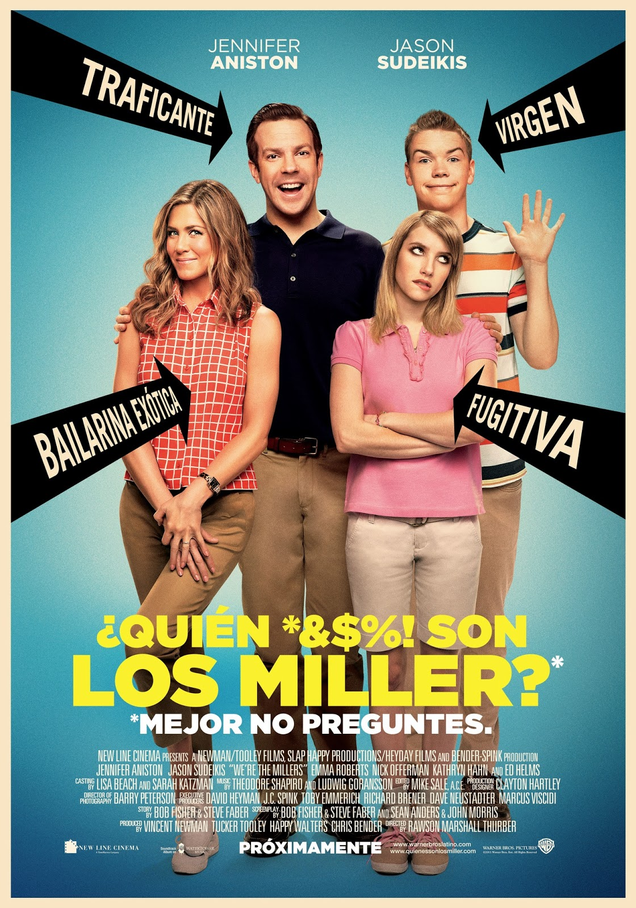
Ver trailer
Noche de juegos
Max y Annie quedan todas las semanas con sus amigos para celebrar una noche de
juegos. Competitivos hasta el extremo, ahora están preocupados por la vuelta
del hermano de Max, un presuntuoso ganador que lleva toda la vida
menospreciándolo. El grupo decide organizar un juego de resolver un falso
asesinato, pero a medida que la partida avanza se dan cuenta de que esta vez
lo que está ocurriendo es real.
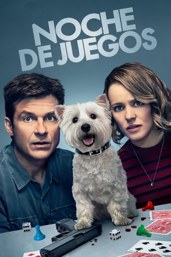
Ver trailer
Pasante de moda
Ben Whittaker, un jubilado viudo de 70 años, tiene demasiado tiempo libre y
muy pocas cosas con las que llenarlo. Cuando ve una oferta de trabajo para
'becarios sénior' en una empresa que opera en internet, no duda en presentarse. Desde el minuto uno, Ben comienza a ganarse el cariño y respeto de sus compañeros y de su jefa, Jules Ostin.
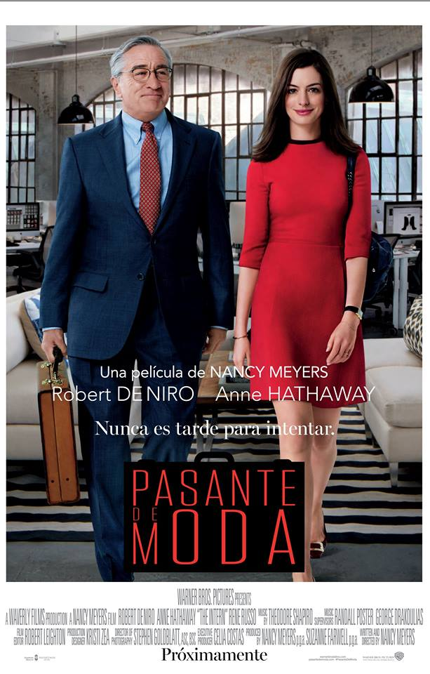
Ver trailer
Ladrona de identidades
Diana, residente de Florida, lleva una vida lujosa como la reina de los almacenes:
compra todo lo que desea, y gratis, gracias a Sandy Patterson, un hombre de Denver a
quien le robó su identidad. Con una semana para seguir a Diana antes de perderlo todo,
el verdadero Sandy viaja al sur para confrontar a la estafadora y llevarla a Denver a
tiempo para limpiar su nombre y restaurar su historial crediticio.
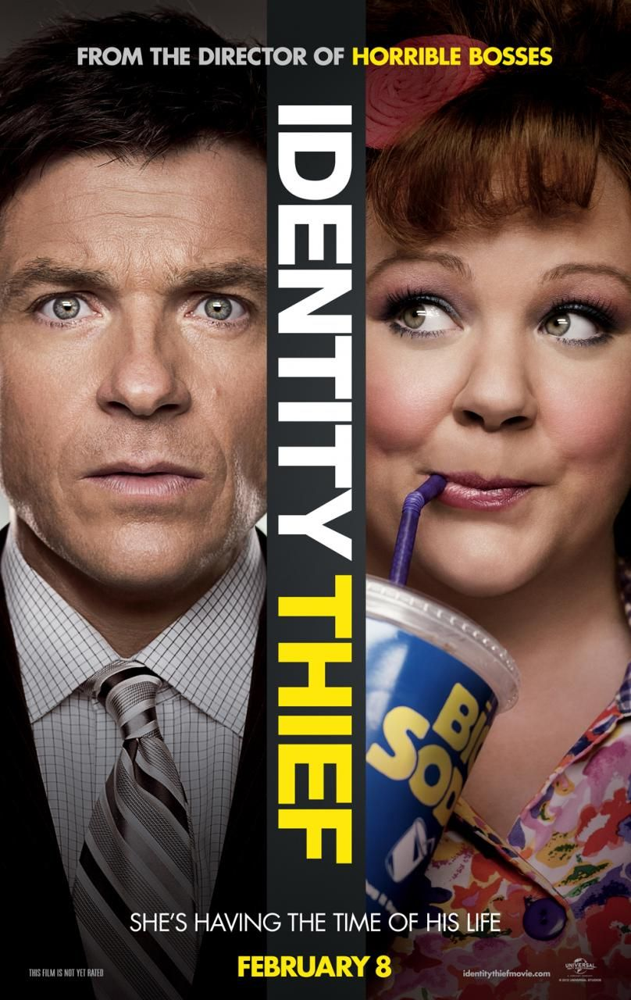
Ver trailer
Venom Let There Be Carnage
Después de encontrar un cuerpo anfitrión en el
periodista de investigación Eddie Brock, el simbionte alienígena
debe enfrentarse a un nuevo enemigo, Carnage, el alter ego del asesino
en serie Cletus Kasady.
 Ver trailer
Ver trailer
Suicide Squad
Un grupo de super villanos se
encuentran encerrados en Belle Reve, una prisión de alta seguridad con la tasa de
mortalidad más alta de Estados Unidos. Para salir de allí harán cualquier cosa,
incluso unirse al grupo Task Force X, dedicado a llevar a cabo misiones suicidas bajo
las órdenes de Amanda Waller. Fuertemente armados son enviados a la isla Corto Maltese,
una jungla repleta de enemigos.
 Ver trailer
Ver trailer
Black Widow
Una peligrosa conspiración,
relacionada con su pasado, persigue a Natasha Romanoff,
también conocida como Viuda Negra. La agente tendrá que lidiar con
las consecuencias de haber sido espía, así como con las relaciones rotas,
para sobrevivir.
 Ver trailer
Ver trailer
Mortal Kobat
Cole Young, el luchador de MMA,
acostumbrado a recibir palizas por dinero, desconoce su ascendencia, y tampoco sabe por qué el
emperador Shang Tsung de Outworld ha enviado a su mejor guerrero, Sub-Zero,
un Cryomancer sobrenatural, para dar caza a Cole. Ante esta situación,
Cole teme por la seguridad de su familia y busca a Sonya Blade siguiendo
las indicaciones de Jax, un comandante de las Fuerzas Especiales que tiene
la misma extraña marca de dragón con la que nació Cole.
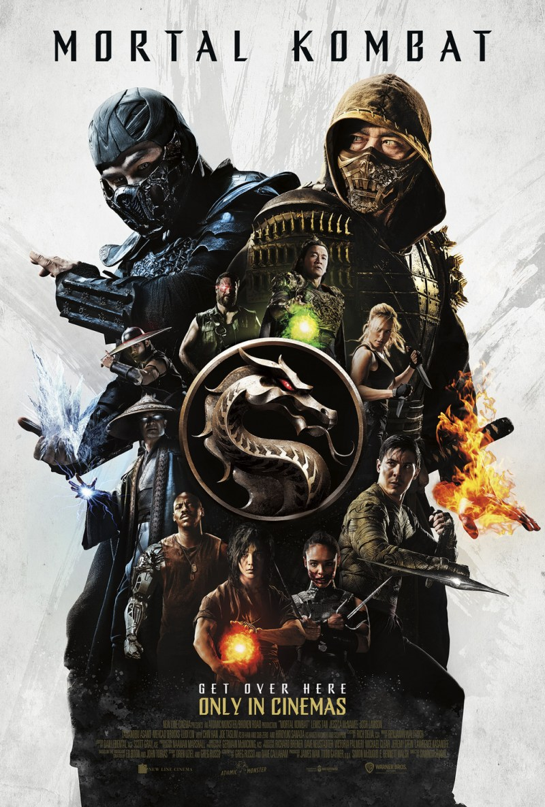
Ver trailer
Nobody
Hutch, un hombre corriente,
deja que roben en su casa sin oponer resistencia.
Su esposa y su hijo empiezan a tratarlo con frialdad,
decepcionados por su cobardía, por lo que Hutch cambia de
personalidad y abraza el riesgo y la violencia.
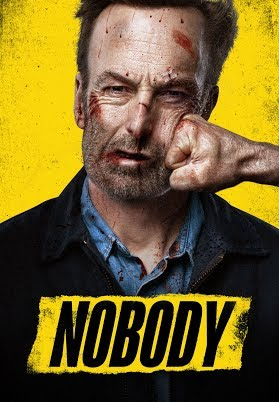
Ver trailer
The Mitchells vs The Machines
El viaje por carretera de la familia Mitchell,
que va a acompañar a uno de sus hijos a su primer día de universidad,
se ve interrumpido por una insurrección tecnológica que amenaza
a la humanidad.
 Ver trailer
Ver trailer
Godzilla vs King Kong
En un mundo nuevo donde el hombre y el monstruo ahora coexisten, Monarch debe liderar el
camino hacia un futuro próspero junto a los Titanes, manteniendo a la humanidad bajo control.
Sin embargo, las facciones rivales que quieren manipular a los Titanes para la guerra,
comienzan a aparecer bajo la apariencia de una conspiración nefasta, amenazando con acabar
con toda la vida en el planeta. Mientras tanto, en la isla Calavera, la extraña actividad
sísmica llama la atención de Godzilla y Kong por igual. Esto iniciará el conflicto entre ellos
 Ver trailer
Ver trailer
Space Jam A New Legacy
Atrapado en el espacio digital,
la superestrella del baloncesto LeBron James se une a la banda de
los Looney Tunes para derrotar al Goon Squad en un juego de baloncesto
y salvar a su hijo.
 Ver trailer
Ver trailer
Free Guy
Un cajero de un banco descubre que en realidad es un
personaje sin papel dentro de un brutal videojuego de mundo
interactivo.
 Ver trailer
Ver trailer
Jungle Cruise
Película basada en el paseo en un parque temático de
Disneyland donde un pequeño barco fluvial lleva a un grupo de viajeros a
través de una jungla llena de peligrosos animales y reptiles, pero con un
elemento sobrenatural.
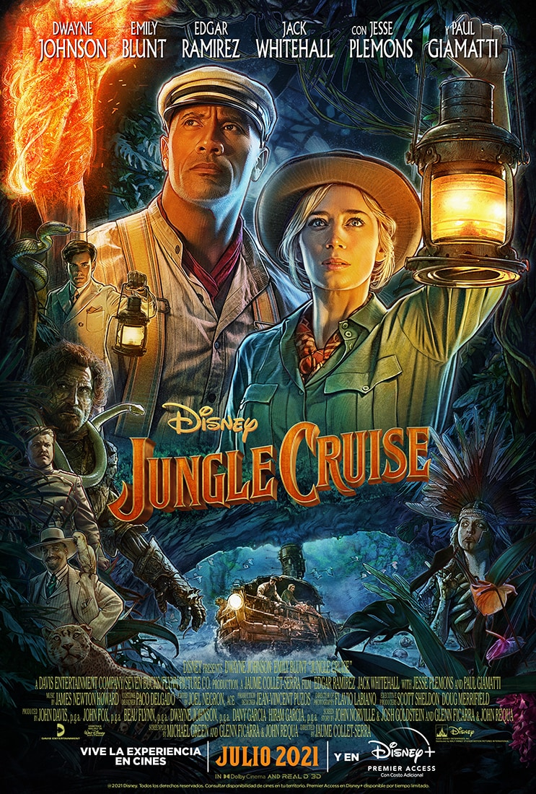
Ver trailer
Titanic
Jack es un joven artista que gana un pasaje para viajar a América en el Titanic,
el transatlántico más grande y seguro jamás construido. A bordo del buque conoce a Rose,
una chica de clase alta que viaja con su madre y su prometido Cal, un millonario
engreído a quien solo interesa el prestigio de la familia de su prometida
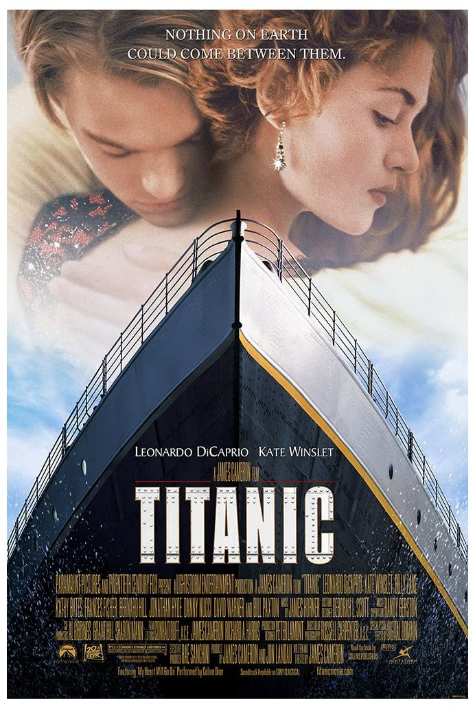
Ver trailer
500 días juntos
Tom, un escritor de tarjetas de felicitación y un romántico desesperado, se sorprende
totalmente cuando su novia, Summer, repentinamente lo abandona. Él analiza los 500 días
que pasaron juntos para intentar descubrir en que parte falló su relación amorosa y en
el proceso, Tom redescubre sus verdaderas pasiones en la vida.
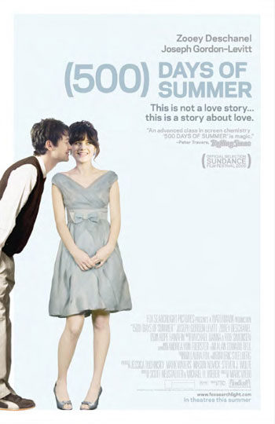
Ver trailer
Casablanca
Durante la II Guerra Mundial (1939-1945), Casablanca era una ciudad a la que llegaban
huyendo del nazismo gentes de todas partes: llegar era fácil, pero salir era casi
imposible, especialmente si el nombre del fugitivo figuraba en las listas de la Gestapo.
En esta ocasión, el objetivo es Victor Laszlo, cuya única esperanza es Rick Blaine,
propietario del 'Rick's Café' y antiguo amante de su mujer.
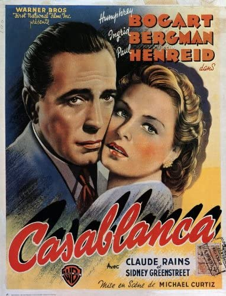
Ver trailer
Notting Hill
El sueño de todo hombre se hace realidad para el londinense William Thacker cuando una
mega estrella estadounidense entra en su negocio de venta de libros. A partir de allí
nacerá una historia de amor que no será fácil de sobrellevar.
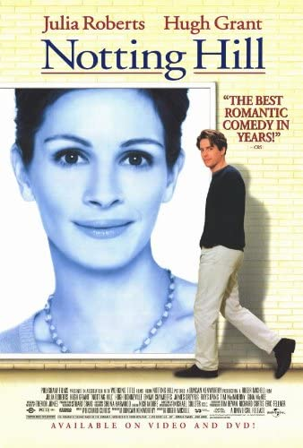
Ver trailer
Pretty Woman
Durante un viaje de negocios a Los Ángeles, Edward, un ejecutivo que compra y vende
empresas, encuentra a la prostituta Vivian. Después de pasar una primera noche con ella,
Edward le ofrece dinero para que pase toda la semana con él y le acompañe a diversos
actos sociales. A medida que van pasando los días, los dos descubren que tienen que
superar diversos obstáculos para poder unir sus mundos tan distintos.
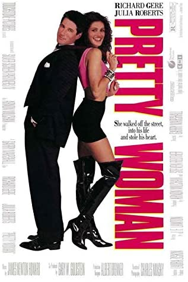
Ver trailer